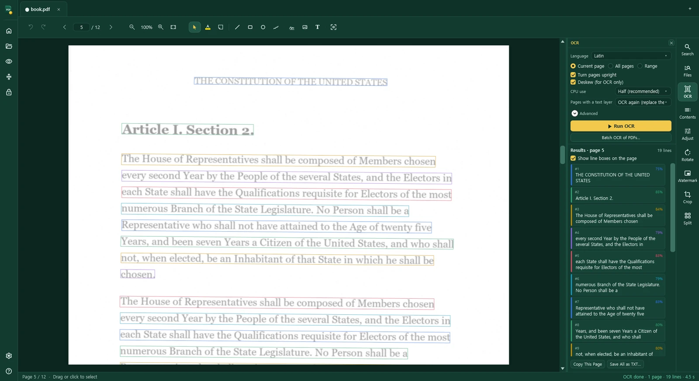

Korean OCR for scanned PDFs, on your own PC
BixoPDF turns scanned Korean books and documents into PDFs you can search and copy from. It reads Hangul, Hanja and word spacing in one pass, and it runs on your computer, so the documents never go to a server.
Windows 10 (1809+) and 11 · 64-bit · Works offline
Trained for Korean text
We trained our recognizers on our own data. Korean is read as it is printed: Hangul and Hanja on the same line, the spaces between words put in, and Japanese quotations recognized along with the Korean. Pages set in two columns are read column by column, so copied text and search follow the order you read in.
How it compared on a Korean book
We tested 36 scanned pages of a Korean court handbook, 53,123 characters of body text, boxed examples, tables and 6-point footnotes, and counted the characters each program got wrong:
| Program | Characters wrong |
|---|---|
| BixoPDF | 0.84% |
| Leading PDF program A | 2.31% |
| Leading PDF program B | 4.20% |
That is about a third of program A's errors and a fifth of program B's. Programs A and B are two widely used commercial PDF editors with built-in OCR. The pages were made from a born-digital PDF as 300-dpi greyscale scans with slight tilt, blur, noise and JPEG compression, and the book was not used to train our recognizers.
These results come from tests run in a limited environment on a limited set of documents. Accuracy depends on the scan, the layout, the fonts and the settings used, and your results may differ. The full method is on the home page.

How it works
- Open the scan. Open the PDF in BixoPDF. If the pages are faint or grey, raise thickness, contrast or brightness first; tilted pages are straightened before reading.
- Run OCR. Start recognition from the OCR panel, with Korean as the language. It runs in the background, so you can read and mark up other PDFs in their own tabs meanwhile. For many files, drop a folder of PDFs into batch OCR.
- Check and save. The recognized text is saved into the PDF as an invisible layer under the page image. The page looks the same, but search, selection and copy now work in BixoPDF and in any other PDF reader.
If an older program left weak OCR text hidden under the scan, BixoPDF replaces it with the new result. You can also export the text as plain text, or save the PDF as a Word or Excel file with the OCR text included.
OCR uses a lot of memory. On a PC with limited memory, let one OCR job finish before starting the next.
Private by design
Court records, contracts and books under copyright often should not be uploaded to an online OCR service. In BixoPDF the recognizers are installed with the app, and OCR works without an internet connection and without an account.
More for Korean readers
The app itself is available in Korean. The built-in dictionary covers Korean, with Korean verb endings looked up under the base form, so you can double-click a word on an OCR'd page and see its meaning. BixoPDF can also build bookmarks and links from a book's contents page, which works on contents pages read by OCR too.
Questions
Does Korean OCR need an internet connection?
No. The recognizers are installed with the app and run on your computer. Your documents are not uploaded anywhere.
Does it read Hanja and mixed Korean and Japanese text?
Yes. The Korean recognizer reads Hangul, Hanja and word spacing in one pass, with Japanese quotations.
Can other PDF readers search the result?
Yes. The recognized text is saved as an invisible text layer under the page image, so search and copy work in any PDF reader.
Is the app itself available in Korean?
Yes. The app starts in your Windows language and can be switched under Settings → Language. Korean is one of its languages.
Try it on your own scans
The 15-day trial is the full app, with no watermark and no limits. After that, BixoPDF is $29, paid once, on Microsoft Store.
See all 50 OCR languages on the home page.